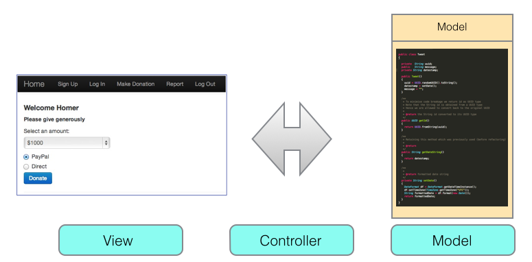

The aim of this lab is to facilitate the creation of a walking skeleton of the baseline Android MyTweet assignment 2 app.
The information provided should help you to:
During the summer school we developed Donation, MyRent and WitPress apps using the Play framework.
In this semester we have developed Donation, MyRent and MyTweet as mobile apps using the Android development framework.
In this lab we:
describe how to modify a MyTweet type app so that:
develop a corresponding Play server-side app
write a JUnit test app
MyTweet refactoring: This essentially comprises the following steps:
A study of Figures 1, 2 and 3 below may provide further insight into the process.

You are required to develop three apps:
The server-side app should be deployed both on localhost and the cloud.
The MyTweetTest should test with the server-side app (MyTweetService) deployed on both localhost and the cloud.
Finally the Android client app (MyTweet) should be tested against MyTweetService running on both localhost and the cloud.
Figure 1 illustrates this sequence.
Suggested development approach
Here is one approach you might consider adopting:
Below are the outline steps to develop the server side Play app.
It is worth noting that whereas in this lab we send requests only from a native Android app and a JUnit test app, any network-enabled app that uses a compatible api can engage in request-response sessions with MyTweetService.
play new MyTweetService_id
where id is your student id or other unique identifier. The purpose is the differentiate each student's app on Heroku.
Then cd into MyTweetService_id folder and run:
play eclipsify
Import the project into your Eclipse workspace.
Activate the local database by uncommenting #db=mem in conf/application.conf
Expand the folder structure and observe that the model folder is empty:
The file structure of the completed is illustrated in Figure 3:
A study of Figure 2 reveals the changes required:
GsonBinder remains unchanged: copy it from a previous lab or use the code below.
Download the gson jar file from here and:
Here is the code for both GsonBinder and JsonParser:
package utils;
import java.lang.reflect.Type;
import java.util.List;
import com.google.gson.Gson;
import com.google.gson.reflect.TypeToken;
import models.Tweet;
public class JsonParsers
{
static Gson gson = new Gson();
public static Tweet json2Tweet(String json)
{
return gson.fromJson(json, Tweet.class);
}
public static List<Tweet> json2Tweets(String json)
{
Type collectionType = new TypeToken<List<Tweet>>() {}.getType();
return gson.fromJson(json, collectionType);
}
public static String tweet2Json(Object obj)
{
return gson.toJson(obj);
}
}
package utils;
import java.lang.annotation.Annotation;
import java.lang.reflect.Type;
import play.data.binding.Global;
import play.data.binding.TypeBinder;
import com.google.gson.JsonElement;
import com.google.gson.JsonParser;
@Global
public class GsonBinder implements TypeBinder<JsonElement>
{
public Object bind(String name, Annotation[] notes, String value, Class toClass, Type toType) throws Exception
{
return new JsonParser().parse(value);
}
}
Here is the model code followed by some explanations:
package models;
import javax.persistence.Column;
import javax.persistence.Entity;
import javax.persistence.Id;
import play.db.jpa.GenericModel;
@Entity
public class Tweet extends GenericModel
{
@Id
@Column(name="id")
public String uuid;
public String message;
public String datestamp;
public Tweet(String uuid, String message, String datestamp)
{
this.uuid = uuid;
this.message = message;
this.datestamp = datestamp;
}
}
Notice the following points regarding the model class Tweet:
A key point to remember in designing this model class is that the field names we use here must be retained exactly in the client model.
Finally, here is the code for the API:
package controllers;
import java.util.List;
import java.util.Random;
import models.Tweet;
import play.Logger;
import play.mvc.Controller;
import utils.JsonParsers;
import com.google.gson.JsonElement;
public class MyTweetServiceAPI extends Controller
{
public static void tweets()
{
List<Tweet> tweets = Tweet.findAll();
renderJSON(JsonParsers.tweet2Json(tweets));
}
public static void tweet(String id)
{
Tweet tweet = Tweet.findById(id);
if (tweet == null)
{
notFound();
}
else
{
renderJSON(JsonParsers.tweet2Json(tweet));
}
}
public static void createTweet(JsonElement body)
{
Tweet tweet = JsonParsers.json2Tweet(body.toString());
tweet.save();
renderJSON(JsonParsers.tweet2Json(tweet));
}
public static void deleteTweet(String id)
{
Tweet tweet = Tweet.findById(id);
if (tweet == null)
{
notFound();
}
else
{
tweet.delete();
renderText("success");
}
}
public static void deleteAllTweets()
{
Tweet.deleteAll();
renderText("success");
}
}
A walking skeleton test app is available to download from here.
Here is the expanded project structure:
Observe the similarity between fields in the models in this test app and the service app (MyTweetService):
package app.model;
import java.util.UUID;
import com.google.common.base.Objects;
import static com.google.common.base.Objects.toStringHelper;
public class Tweet
{
public String uuid;
public String message;
public String datestamp;
public Tweet(){}
public Tweet(String message, String datestamp)
{
this.uuid = UUID.randomUUID().toString();
this.message = message;
this.datestamp = datestamp;
}
@Override
public boolean equals(final Object obj)
{
if (obj instanceof Tweet)
{
final Tweet other = (Tweet) obj;
return Objects.equal(uuid, other.uuid)
&& Objects.equal(message, other.message)
&& Objects.equal(datestamp, other.datestamp) ;
}
else
{
return false;
}
}
@Override
public String toString()
{
return toStringHelper(this).addValue(uuid)
.addValue(message)
.addValue(datestamp)
.toString();
}
/**
* To minimise code breakage we return id as UUID type
* Note that the String id is obtained from a UUID type
* Hence we are allowed to convert back to the original UUID
*
* @return the String id converted to its UUID type
*/
public UUID getId()
{
return UUID.fromString(uuid);
}
}
Study the code in the API class:
package app.api;
import java.util.List;
import app.model.Tweet;
public class MyTweetServiceAPI
{
public static List<Tweet> getTweets() throws Exception
{
String response = Rest.get("/api/tweets");
List<Tweet> tweetList = JsonParsers.json2Tweets(response);
return tweetList;
}
public static Tweet getTweet(Long id) throws Exception
{
String response = Rest.get("/api/tweets/" + id);
Tweet tweet = JsonParsers.json2Tweet(response);
return tweet;
}
public static Tweet createTweet(Tweet tweet) throws Exception
{
String response = Rest.post ("/api/tweets", JsonParsers.tweet2Json(tweet));
return JsonParsers.json2Tweet(response);
}
public static void deleteTweet(Long id) throws Exception
{
Rest.delete ("/api/tweets/" + id);
}
public static void deleteAllTweets() throws Exception
{
Rest.delete ("/api/tweets");
}
}
Note the URL in the Rest class:
private static final String URL = "http://localhost:9000";
This IP address works for the test app but not for the Android app when running within Genymotion (as this in turn is hosted by Virtual Box).
None of the tests has been completed but the skeleton of a small number of tests is provided as a guide.
We now address the refactoring of assignment 1 app into an Android client capable of interacting with the server-side Play app (MyTweetService).
The steps outline below comprise one of many possible approaches to developing MyTweet native Android client.
The stripped-down or baseline version of MyTweet is shown here:
As already pointed out, this is a standalone app and the purpose of this lab is to refactor it so that its data will reside on another app (MyTweetService) that will be located on a server (localhost or the cloud - Heroku).
The design approach we adopt here will facilate the introduction of a user model and associated views in later grade-range versions of the assignment.
Figure 2 illustrates this lab's completed version.
We will retrieve the list of tweets from the server in the WelcomeActivity class, the code for which is provided below.
Note the following:
package org.wit.mytweet.activities;
import java.util.List;
import org.wit.mytweet.app.MyTweetApp;
import org.wit.mytweet.http.Response;
import org.wit.mytweet.model.MyTweetServiceAPI;
import org.wit.mytweet.model.Tweet;
import android.app.Activity;
import android.content.Intent;
import android.os.Bundle;
import android.view.Menu;
import android.view.MenuItem;
import android.view.View;
import android.view.View.OnClickListener;
import android.widget.Button;
import android.widget.Toast;
import org.wit.mytweet.R;
public class WelcomeActivity extends Activity implements Response<Tweet>, OnClickListener
{
Button switchTimeline;
@Override
protected void onCreate(Bundle savedInstanceState)
{
super.onCreate(savedInstanceState);
setContentView(R.layout.activity_welcome);
switchTimeline = (Button) findViewById(R.id.button_switch_timeline);
switchTimeline.setEnabled(false);
switchTimeline.setOnClickListener(this);
}
/**
* Make the server call to retrieve tweets in onResume
*/
@Override
protected void onResume()
{
MyTweetServiceAPI.getTweets(this, this, "retrieving tweets");
super.onResume();
}
/**
* Following 3 methods implementations required by Response<T> interface
*/
@Override
public void setResponse(List<Tweet> aList)
{
//tweets successfully retrieved from server
MyTweetApp app = (MyTweetApp) getApplication();
app.tweetlist.updateTweets(aList);
Toast.makeText(this, "tweets retrieved", Toast.LENGTH_SHORT).show();
switchTimeline.setEnabled(true);
}
@Override
public void setResponse(Tweet anObject)
{
}
@Override
public void errorOccurred(Exception e)
{
//failed to retrieve tweets
Toast.makeText(this, "retrieval failed", Toast.LENGTH_LONG).show();
}
/**
* OnClickListener method implementation
* switchTimeLine button enabled only on successful retrieval of tweets
* click button switches to tweet list view
*/
@Override
public void onClick(View v)
{
switch (v.getId())
{
case R.id.button_switch_timeline:
Intent i = new Intent(this, TimeLineActivity.class);
startActivity(i);
}
}
}
We are including a screenshot of the folder structure used in preparing this lab. It is appreciated that yours will likely vary considerably from this. Nevertheless the figure may be of some help.
Here is the code for the http module classes: Request, Response, Rest followed by the MyTweetServiceAPI class.
You may find it necessary to refactor the package name to suit your folder structure.
Also, set the Rest.URL appropriate to your environment and the server location.
package org.wit.mytweet.http;
import java.util.List;
public interface Response<T>
{
public void setResponse(List<T> aList);
public void setResponse(T anObject);
public void errorOccurred (Exception e);
}
package org.wit.mytweet.http;
import org.apache.http.HttpResponse;
import org.apache.http.client.methods.HttpDelete;
import org.apache.http.client.methods.HttpGet;
import org.apache.http.client.methods.HttpPost;
import org.apache.http.client.methods.HttpPut;
import org.apache.http.entity.StringEntity;
import org.apache.http.impl.client.BasicResponseHandler;
import org.apache.http.impl.client.DefaultHttpClient;
import org.apache.http.params.BasicHttpParams;
import org.apache.http.params.HttpConnectionParams;
import org.apache.http.params.HttpParams;
public class Rest
{
private static DefaultHttpClient httpClient = null;
//To determine ip address of localhost when using genymotion use
//ipconfig (win) or ifconfig(osx). Address will vary from one machine to another
//private static final String URL = "http://192.168.61.6:9000";//iMac
private static final String URL = "http://myyamba-service.herokuapp.com";
//private static final String URL = "http://10.0.3.2:9000";
private static DefaultHttpClient httpClient()
{
if (httpClient == null)
{
HttpParams httpParameters = new BasicHttpParams();
HttpConnectionParams.setConnectionTimeout(httpParameters, 10000);
HttpConnectionParams.setSoTimeout(httpParameters, 10000);
httpClient = new DefaultHttpClient(httpParameters);
}
return httpClient;
}
public static String get(String path) throws Exception
{
HttpGet getRequest = new HttpGet(URL + path);
getRequest.setHeader("accept", "application/json");
HttpResponse response = httpClient().execute(getRequest);
return new BasicResponseHandler().handleResponse(response);
}
public static String delete(String path) throws Exception
{
HttpDelete deleteRequest = new HttpDelete(URL + path);
HttpResponse response = httpClient().execute(deleteRequest);
return new BasicResponseHandler().handleResponse(response);
}
public static String put(String path, String json) throws Exception
{
HttpPut putRequest = new HttpPut(URL + path);
putRequest.setHeader("Content-type", "application/json");
putRequest.setHeader("accept", "application/json");
StringEntity s = new StringEntity(json);
s.setContentEncoding("UTF-8");
s.setContentType("application/json");
putRequest.setEntity(s);
HttpResponse response = httpClient().execute(putRequest);
return new BasicResponseHandler().handleResponse(response);
}
public static String post(String path, String json) throws Exception
{
HttpPost putRequest = new HttpPost(URL + path);
putRequest.setHeader("Content-type", "application/json");
putRequest.setHeader("accept", "application/json");
StringEntity s = new StringEntity(json);
s.setContentEncoding("UTF-8");
s.setContentType("application/json");
putRequest.setEntity(s);
HttpResponse response = httpClient().execute(putRequest);
return new BasicResponseHandler().handleResponse(response);
}
}
package org.wit.mytweet.http;
import java.util.List;
import org.wit.android.helpers.LogHelpers;
import android.app.ProgressDialog;
import android.content.Context;
import android.os.AsyncTask;
@SuppressWarnings("rawtypes")
public abstract class Request extends AsyncTask<Object, Void, Object>
{
public Response responder;
public ProgressDialog dialog;
public Context context;
public String message;
public Exception error;
public Request(Context context, Response responder, String message)
{
this.responder = responder;
this.context = context;
this.message = message;
}
@Override
protected void onPreExecute()
{
super.onPreExecute();
this.dialog = new ProgressDialog(context, 1);
this.dialog.setMessage(message);
this.dialog.show();
}
@Override
protected Object doInBackground(Object... params)
{
error = null;
try
{
return doRequest(params);
}
catch (Exception e)
{
error = e;
LogHelpers.info(this, e.getMessage());
}
return null;
}
protected abstract Object doRequest(Object... params) throws Exception;
@SuppressWarnings("unchecked")
@Override
protected void onPostExecute(Object result)
{
super.onPostExecute(result);
if (dialog.isShowing())
{
dialog.dismiss();
}
if (error != null)
{
responder.errorOccurred(error);
}
else
{
if (result instanceof List)
{
responder.setResponse((List)result);
}
else
{
responder.setResponse(result);
}
}
}
public void onDestroy()
{
dialog.cancel();
}
}
package org.wit.mytweet.model;
import java.util.List;
import org.wit.mytweet.http.Request;
import org.wit.mytweet.http.Response;
import org.wit.mytweet.http.Rest;
import org.wit.mytweet.httputils.JsonParsers;
import android.content.Context;
public class MyTweetServiceAPI
{
public static void getTweets(Context context, Response<Tweet> response, String dialogMesssage)
{
new GetTweets(context, response, dialogMesssage).execute();
}
public static void createTweet(Context context, Response<Tweet> response, String dialogMesssage, Tweet tweet)
{
new CreateTweet(context, response, dialogMesssage).execute(tweet);
}
public static void deleteTweet(Context context, Response<Tweet> response, String dialogMesssage, Tweet tweet)
{
new DeleteTweet(context, response, dialogMesssage).execute(tweet);
}
}
/*================================================================================*/
class GetTweets extends Request
{
public GetTweets(Context context, Response<Tweet> callback, String message)
{
super(context, callback, message);
}
@Override
protected List<Tweet> doRequest(Object... params) throws Exception
{
String response = Rest.get("/api/tweets");
List<Tweet> tweetList = JsonParsers.json2Tweets(response);
return tweetList;
}
}
class CreateTweet extends Request
{
public CreateTweet(Context context, Response<Tweet> callback, String message)
{
super(context, callback, message);
}
@Override
protected Tweet doRequest(Object... params) throws Exception
{
String response = Rest.post ("/api/tweets", JsonParsers.tweet2Json(params[0]));
return JsonParsers.json2Tweet(response);
}
}
class DeleteTweet extends Request
{
public DeleteTweet(Context context, Response<Tweet> callback, String message)
{
super(context, callback, message);
}
@Override
protected Tweet doRequest(Object... params) throws Exception
{
String id = ((Tweet)params[0]).getId().toString();
String path = "/api/tweets/" + id;
String response = Rest.delete (path);
if(response.equals("success"))
{
return new Tweet();
}
else
{
throw new Exception();
}
}
}
The MyTweetFragment layout is shown here in Figure 1:
We require that when the Tweet button is clicked, a Tweet object is created and sent to the server-side app across the network (MyTweetService).
To enable this it is necessary to do the following:
Here are the relevant code snippets. Obviously the names may not exactly match those you will have chosen for your implementation.
public class MyTweetFragment extends Fragment implements TextWatcher, OnClickListener, Response<Tweet>
@Override
public void setResponse(List<Tweet> aList)
{
}
@Override
public void setResponse(Tweet anObject)
{
Toast toast = Toast.makeText(getActivity(), "tweet message successfully sent, Toast.LENGTH_SHORT);
toast.show();
}
@Override
public void errorOccurred(Exception e)
{
Toast toast = Toast.makeText(getActivity(), "failed to send tweet", Toast.LENGTH_SHORT);
toast.show();
}
public void onClick(View v)
{
switch (v.getId())
{
case R.id.tweet_button:
MyTweetServiceAPI.createTweet(getActivity(), this, "tweeting", this_tweet);
break;
}
}
Recall that one may delete a set of list items (one or more) in the list view.
Here we have created a selection of tweet. We can view them, for example, in PostMan as shown in Figure 1:
.
Use a long press initially and then click on any further items you wish to delete:
Click the delete icon and observe that the selected tweets disappear from both the device and the server as shown in Figure 3:
Here is the code to achieve this:
Modify the class signature by implementing Response interface.
public class TimeLineFragment extends ListFragment implements OnItemClickListener, MultiChoiceModeListener, Response<Tweet>
Modify the MultiChoiceModeListener.onActionItemClicked method:
@Override
public boolean onActionItemClicked(ActionMode mode, MenuItem item)
{
switch (item.getItemId())
{
case R.id.menu_item_delete_tweet:
removeTweet(mode);
return true;
default:
return false;
}
}
private void removeTweet(ActionMode mode)
{
for (int i = adapter.getCount() - 1; i >= 0; i--)
{
if (listView.isItemChecked(i))
{
Tweet tweet = adapter.getItem(i);
tweetlist.removeTweet(tweet);
MyTweetServiceAPI.deleteTweet(getActivity(), this, "deleting tweet", tweet); //network call to delete this tweet
}
}
mode.finish();
tweetlist.saveTweets(); //update the local list of tweets
adapter.notifyDataSetChanged();
}
Note that this code assumes you have retained serialization in your MyTweet basline app.
Here are the Response interface methods:
@Override
public void setResponse(List<Tweet> aList)
{
}
@Override
public void setResponse(Tweet anObject)
{
String msg = "tweet deletion success";
Toast.makeText(getActivity(), msg, Toast.LENGTH_SHORT).show();
LogHelpers.info(this, msg);
}
@Override
public void errorOccurred(Exception e)
{
String msg = "tweet deletion failure";
Toast.makeText(getActivity(), msg, Toast.LENGTH_SHORT).show();
LogHelpers.info(this, msg + " : " + e.getMessage());
}
Here is the code for Tweet.java, the model class.
The key points to note are:
These changes have been made:
Important: Observe how the field names correspond to those in the server app (MyTweetService).
package org.wit.mytweet.model;
import java.text.DateFormat;
import java.util.Date;
import java.util.TimeZone;
import java.util.UUID;
public class Tweet
{
/**
* We have changed fields Date and UUID for ease of use in http
* We could have allowed the service to generate the id as is usual practice
* However it's more convenient to do so when the Tweet instance is first created
* Otherwise a blocking http call would be required required in the Tweet constructor below
* The id is required immediately in the application
* We send to id the server in the http call and configure the server to allow this practice
*/
private String uuid; //mandates use of getter method getId()
public String message;
private String datestamp; //mandates use of getter method getDateString()
public Tweet()
{
uuid = UUID.randomUUID().toString();
datestamp = setDate();
message = "";
}
/**
* To minimise code breakage we return id as UUID type
* Note that the String id is obtained from a UUID type
* Hence we are allowed to convert back to the original UUID
*
* @return the String id converted to its UUID type
*/
public UUID getId()
{
return UUID.fromString(uuid);
}
/**
* Retaining this method which was previously used (before refactoring)
*
* @return
*/
public String getDateString()
{
return datestamp;
}
/**
*
* @return formatted date string
*/
private String setDate()
{
DateFormat df = DateFormat.getDateTimeInstance();
df.setTimeZone(TimeZone.getTimeZone("UTC"));
String formattedDate = df.format(new Date());
return formattedDate;
}
}
Default Play framework behaviour is to generate a default Long id primary key.
Let's explore why this would be problematical for us.
Here is a code snippet from the list fragment, in this case TimeLineFragment.java:
@Override
public boolean onOptionsItemSelected(MenuItem item)
{
switch (item.getItemId())
{
...
case R.id.menuTweet:
Tweet tweet = new Tweet(); //Item 1
tweetlist.addTweet(tweet);
Intent i = new Intent(getActivity(), MyTweetPagerActivity.class);
i.putExtra(MyTweetFragment.EXTRA_TWEET_ID, tweet.getId()); //Item 2
startActivityForResult(i, 0);
return true;
default:
return super.onOptionsItemSelected(item);
}
}
Item 1: We create a default Tweet object.
Item 2: We put an Extra to the new Intent. This extra has as an argument the value of the Tweet id:
Two choices were presented in refactoring this code:
We have chosen option 1 for two reasons:
The apk file, MyTweet, on which this lab is based, is available to download here.
You may also download the MyYamba apk file which was developed using code from Learning Adroid 2nd Edition (Garenta & Nakamura).
These apps may be installed by dragging and dropping onto the Genymotion emulator.
Both apps are at prototype standard, have not been adequately tested, contain numerous anomalies and are clearly not fit for general deployment and use. Nevertheless they may generate some helpful ideas for this assignment.
Gson lib jar file available here: